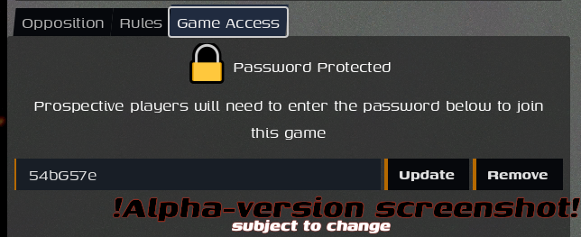
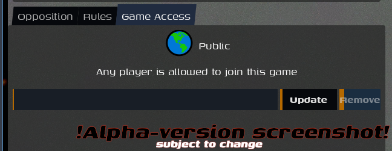
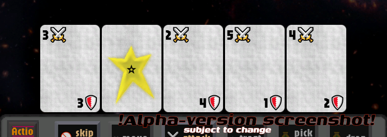
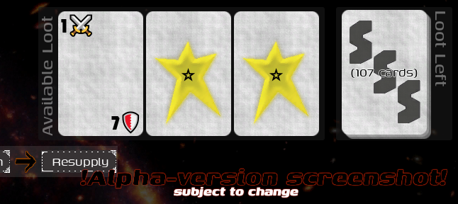

Solar Scavenge Squad
Alpha Content
The game is in Alpha; so is the documentation.
Everything in the game, and everything documented here, is subject to change with future versions of the game.
This documentation may contain mistakes and inaccuracies, and is poorly edited. Please send constructive critism and documentation requests to sssguidefeedback@emberlockgames.com
Guide: Getting Into a Game
1-to-Six Players
This game supports one-to-six players, all playing co-operatively against self-controlled enemies who spawn in (1-per-player) each round.
A single-player game is mechanically identical to a multi-player game. You will need to create your own game (as opposed to joining an open game, see below), and running your own local server (not available in Alpha 😓) is recommended.
For a multiplayer game with strangers, join an open game if one exists, or create your own (and remember to make it public) and wait until players join and Ready-up.
For a private multiplayer game, create your own game and set a known password. Or join a specific game, and provide the password you've been given.
For LAN games, create a game on your own server, make it public, and share your IP and port. Or from Join Game manually add their IP and port.
For dedicated hosting, Win/Linux executables and a container image will be available with the full release.
Joining a Game
- From the game's main menu, select Join Game
- Wait up to a few seconds for games to be populated
- If the/a game you want to join is listed, click the Join Game button in that row (if a password is required, you will be prompted to enter it)
After joining a game, you will be taken to the Game Room for game and player setup. See the appropriate Guide below for more.
In some situations (e.g. LAN gaming) you may know the address of a server and want to add it directly. Do so at the bottom of the screen, and that server will be remembered and checked when looking for servers/games in the future (you can remove it on the Create Game screen). If any games are running on that server (and it is reachable), they will be listed in the table.
If no suitable game is available, consider creating your own...
Creating a Game
There are two ways to create your own game: use a server that's already running somewhere and has capacity to run another game, or start your own server and communicate with it.
Use an Available Server
- From the game's main menu, select Create Game
- Wait a few seconds for servers to be populated
- If the/a server you want to use is listed, compatible, and has capacity: click the Create Game button in that row (if a password is required, you will be prompted to enter it)
Start Your Own Server
This is disabled for the Alpha release. For now please use an official server (see the
Use an Available Serversection above). Contact gameservers@emberlockgames.com if you cannot find an official server with capacity to start a game.
- From the game's main menu, select
Create Game - Specify a different hostname/address and port number, if desired
- Click
Start Server
A new window will open in the background: this is your local server, and it will be listening for requests coming to your computer for the address and port that was specified. While you play a game hosted locally, it will remember all of the game state and approve all of your moves; closing the window will immediately end/erase all games started on your server.
Controlling Access
After creating a game, you will be taken to the Game Room for game- and player-setup; The game will initially allow multiple players, but require a password (which can be set to a consistent value in the options, or by default will auto-generate a random password for each game). To make the game public, remove the password.


Guide: Game Room & Setup
Your source for these deep-space scans is reliable, and you should have a head start, if you can get a squad assembled and dispatched now.
Just a few extra hands, reliable-enough for this lone contract. More unique weirdos on the crew means more tricks for getting out trouble, but it always seems to bring so much more attention and trouble...
Maybe you should head out alone, and try to sneak in quietly on this one...
All games start in a Game Room, where the admin (the first player to join) can set game configuration and rules, including the maximum number of players allowed in the game, and if a password is required to join. By leaving these to their defaults after creating a new game, you will have a single-player game.
Each player can set their own configuration, identifying themself with a name and color, and choosing a character class. The character class will change passive and active (using star cards) attributes and abilities, as well as your representation in the game.
Each player has a toggle button to indicate when they are Ready for the game to begin. The Game cannot be started until all players are Ready. Once all players have indicated they are Ready, any player can start the game by pressing the Start Game button.
If needed, the admin player can kick any player
Ship and Enemy Configuration
Each game takes place on an abandoned ship, which can be from one of several space-faring solar groups. The configured ship theme changes the selection logic for the rooms of the ship.
Separately, the enemy theme configuration sets the opposition coming to face you on that ship, and will control the combat strength and bonuses of the enemies which spawn in each round.
Which themes are available is determined by the server, see below for the official alpha-release Themes, this will be further customizable per-server in later releases.
Guide: Game Table & Play
The floating derelict has been positively identified by your rented scavenging craft, and appears to have been completely abandonded. Your squad prepares for their excursion in the breaching pod as the ship's computer calculates an ideal entry site for accessing the lost ship's vault.
You find your harness and strap yourself in, and suddenly the pod detaches.
As your squad's breaching pod accelerates towards the wreck, its short-range sensors reveal that an enemy faction has just arrived, perhaps after the same treasure, or perhaps just using the ship as bait.
After a game has started, it moves to a Game Table, where the derelict ship is laid out and player tokens move about, encountering enemy cards dealt onto rooms decided by a D6 roll. Players take turns performing actions, such as moving from room-to-room within the ship, and attacking the enemies which spawn each round.
Turns
A game run takes place over multiple rounds until the objective is completed and all players are either safe or defeated. Each round consists of the following phases in sequence:
- Players' turns, one at a time, in order
- Enemies attack
- Enemies spawn
- Players resupply
Players may only perform actions when it is their turn, but may need to defend themselves during the enemy attack phase.
The Ship
The ship is represented by 6 main rooms in a line, plus your breaching craft at the left end (all players start here), and the vault room at the right end (the treasure starts here).
The interior rooms are D6-addressable, with a die roll of 1 being the room closest to your craft, and a roll of 6 being the room closest to the vault. (The breaching craft and the vault are the un-rollable rooms #0 and #7, respectively.)
Ships are generally unknown, and each of the six rooms start concealed and will be revealed when any player first enters it. The game's configured Ship Theme determines the set of potential rooms which each room of the ship can be randomly drawn from at game start.
Earthen Empire ships all use consistent, well-documented designs. From a distance their hulls are indistinct, but as soon as we breach we'll know which of their 6 doctrine fits we've found, and what it's room layout is.
Bodyn ships have more variety, but they all follow a pattern. The first room is always tough, and the sixth room is a relief. You won't find "biological" rooms either.
Squatters? They'll weld together anything they can get their hands on. You never know what the next room could be.
Player Actions and Movement
Each round during the resupply phase, each player receives 2 Action Points to use during their turn that round.
One Action Point can be spent to do any of the following:
- Move - Move to an adjacent room. Impossible if there are any enemies in the room with you.
- Attack - Use (discard) cards from your hand to attack an enemy in the same room as you.
- ⭐ Ability - Discard a Star Card from your hand to perform your character's special out-of-combat ability
- Pick Up - If the treasure is sitting in the current room, begin carrying it
When carrying the treasure you will be able to perform a free Drop action during your turn.
Any action can be performed twice (for both Action Points) on the same turn if the conditions still apply, other than the final action to Skip Turn, which immediately ends the player's turn even if used as the first action.
Enemies
Enemies are represented by cards which are initially shuffled, and then dealt into the game during the enemy respawn phase.
If the enemy draw deck is ever emptied, all discarded (defeated) enemies are shuffled and returned to the deck. During every Enemy Spawn turn in the game (after any existing enemies attack), a D6 is rolled for each player (even defeated ones), and the next enemy card is placed in the corresponding room.
Enemies are identified by their Risk, a simple indicator of their relative danger (usually 1-3), with a higher value being a stronger, more-dangerous foe. The details of each risk level are determined by the game's enemies configuration. An enemy's Risk is only known once it's been seen, and any enemy which spawns into an un-occupied room will have an Unknown Risk level ("level zero") until a player enters the room.
Player Cards
Player health and capability is represented with a hand of 5 cards, plus a face-down draw stack and a face-up discard pile (which is shuffled back into the draw whenever needed).

At the end of each round, during the Resupply phase, all players will draw additional cards as needed to get back up to 5 in their hand. Cards are discarded only when used, not automatically at the end of a turn.
Combat Cards
The bulk of a player's initial deck are Combat Cards, with an ⚔ Attack and a 🛡 Defense value on them.
The Attack:Defense values on a card are balanced around a mid-point, so a single card will be either evenly mediocre at both attack and defense, slightly better at one and slightly worse at the other, or very good at one and very bad at the other.
When a player chooses to attack an enemy in the same room, they will then choose combat cards to play, and the sum of those cards' attack value will be used.
During the Enemy Turn, each enemy in a room with a player will attack, and a player will need to defend against it. That defending player will choose combat cards to play, and the sum of those cards' defense value will be used.
Star Cards
Special player cards which allow the player to do one of two (depending on the context) things when discarded/played, determined by the character class chosen during game setup.
When played outside of combat, performs your character class's Star Ability, which may require additional choices.
When played during combat, applies your character class's Star Attack effect(s).
Wound Cards
Players can gain wounds from various sources during a game, which are represented by cards added into their deck. Once drawn into the players hand, all cards can only be discarded by being used (such as in combat), but Wound cards have no use and can only be discarded by using some character or room abilities.
If a player ever has a full hand of five wound cards: their character is defeated, and they are immediately removed from the game.
If they were carrying anything, it is dropped where they were. Any negative effects created by their presence (i.e. enemy spawning) remain in the game.
Loot
Some enemies (by Risk number, per the game's enemies configuration; generally The Stronger Ones), room effects, and character abilities will reward players with Loot, which are additional player cards that can be chosen from a few displayed options. Combat loot cards are better than the cards in a player's starting deck.
The available loot options rotate and are replenished routinely, but can be exhausted.

Combat
Combat occurs between a player and an enemy in the same room.
During a player's turn, they may use 1 Action to attack an enemy in the same room (picking the specific enemy if there are multiple). This is an Attack, and the sum of ⚔ attack values on played combat cards will be used, along with any attack-specific passive or star attack effects.
During the enemy's turn, if able, each enemy will attack 1 player in the same room as them. If there are multiple players in the room, the players vote to select the defender. This is a Defense, and the sum of 🛡 defense values on played combat cards will be used, along with any defense-specific passive or star attack effects.
The player will choose which, if any, cards to play from their hand. Combat cards will contribute directly to their overall score, and star cards will contribute their character-specific star attack effects. Wound cards cannot be played in combat.
When the player has chosen their cards, the enemy rolls any dice they get (usually one D6 per Risk level), and then the results are tallied.
Any room, character, or other passive effects are applied for the attacker or defender, along with the player's cards' sum, and enemy's dice sum. Whoever has the higher score wins.
Unless otherwise noted, any enemy D6 roll of 6 deals critical damage, and immediately adds a wounds to the top of your draw stack.
Combat Won
Congratulations! You defeated an enemy.
- The enemy is removed from the room.
- If any loot is rewarded for that enemy, the player selects it now from the available pool.
- Any used player cards are discarded.
Combat Tied
Having ended up on opposite sides of the room, you both pause to reload and mend wounds, glaring at each other.
- The enemy remains.
- The player gains (to their discard) a wound.
- Any used player cards are discarded.
Combat Lost
A fine thrashing has left you humbled, and also severely wounded!
- The enemy remains.
- The player adds (to their draw stack) a wound.
- Any used player cards are discarded.
The Treasure
The treasure begins every game in the ship's Vault, at the other end from your breaching craft. Get to it, pick it up, and get it to the entry to win.
Any player can spend 1 Action to pick up the treasure, and will then carry it with them room-to-room. They can drop the treasure at any time, allowing another player to pick it up. If a player dies while carrying the treasure, it will drop in that room.
Victory is achieved as soon as the treasure enters the breaching pod.
A multiplayer game will continue on after the treasure has entered the pod, until the treasure and all the surviving players are in the breaching pod, to fully grade the results.
Victory / Defeat
When all players are either defeated or in the pod with the treasure, the game ends.
If the treasure is not in the pod then, the mission is a failure. Otherwise...
If few, if any, of your squad survived, it was a success.
If most of your squad survived, victory was achieved.
If your entire squad made it out, then the mission was perfect.
Themes: Ship and Enemy types
Each game will feature one Ship Type (for the type of derelict wreck you're scavenging) and one Enemy Type (for the type of opponent continually arriving at the craft), which are selected in the game room.
The themes available will depend on the server the game is being hosted on, and may include options in addition (i.e. through mod) to the official Alpha Roster:
Bodyn
"A friendlier face for a friendly auto'mate!" blares the advertisement, echoing off the empty concrete cavern, hollow and devoid of any company workers at this hour. Still, the series of routinely-placed at-irregular-spacing screens bathe the space in a perfectly-engineering glow of prismatic light, shifting gently as the screens showed off the company's latest, "HomeOfficeR robot assistants! Combining Bodyn Corporation's industry-leading excellence in Corporobot and ZNaaarg^ for Peopls with their latest cutting-edge innovations of its HouseHeld consumer line of synthetic automation..."
Robobts manufactured by the Bodyn corporation; humanity's most-prolific and most-profitable autonomous robot manufacturer, with a highly debated and secretive level of sentience and self-awareness in their most advanced robots. In the lawless depths of space, well-founded rumors claim that Bodyn has established multiple independent research stations, from which officially unaffiliated "test ships" engage in maneuvers near wrecks and hapless explorers, and rumors indicate that Bodyn is developing close-quarters combat 'bots. To date, Bodyn has denounced all reports as simply jealous slander.
Privateer robots, predictable but formidable.
Enemies: A moderate threat level with no RNG critical-hit wounds
Ships: Predictable patterns in the type of room
Earthen Empire
Dozens of decades of oppression and decline eventually broke the grasp of the corporate empires and promised to return control to the populace, but those people suddenly found they didn't know or care how to replace their former masters. More harm, more bloodshed, and yet still a glimmer of law and order grew, feeding off the decay of the old society.
Control of space assets was re-established early in the regime and used to pacify still-unsettled regions, until all the significant peoples of the world came together in a singular allegiance to the new Earthern Empire. The Empire promised, and delivered, rapid expansion across the solar system, with the whole sliced up into curving cubes half an AU wide orbiting everything.
Regional authorities are always looking to pad out their reports, and see any attempt at unregistered or under-licensed salvage as a mortal threat to public safety, and prefer to count the bodies later when they're cleaning up.
Fascist thugs; strong baseline, but predictable and lower potential.
Enemies: Strong opponents with slightly less randomness: all enemies roll one fewer D6 in combat, but always get a +6 bonus
Ships: The Empire only has 6 ship designs, as soon as the wreck is breached we'll know the full layout
Squatters
Followers of a near-religious ideology that Possession means Ownership and every man is entitled to whatever he can take and keep.
When the Empire formed, they were helped into power by a groundswell of supporters across the globe willing to enact great violence upon their neighbors, once given enough approval to do so. Each of these local cells and lone actors had their own motivations, but the Empire attempted to unify them around this ethos of independence and liberty. During the uprising these unaffiliated guerrillas were helpful, but they quickly turned into a nuisance for the Empire once it took over civic responsbilities.
Most of the surviving guerrillas were happy to leave their homeland once the Empire offered them enough territory on the new frontier. They were promised plots of territory just like those that were being awarded to the most powerful and well-connected, but in fact received the unwanted empty regions left over from the charting system developed for the elites' new ownings. Still, the Empire managed to deceive enough of them, that these inhabitants considered themselves descendents of heroes for generations after, and considered the Empire as some sort of equally-quaint ally who's lucky to have their continued support.
With each new generation of those that chose to isolate themselves, their prospects grow dimmer and their need greater. Their scanners are often incapable of detecting even nearby wrecks, but they have grown adept at identifying and tracking the trails of incoming salvage craft, which can lead them to two ships for the taking.
Libertarian extremists left alone in the dark too long. Very unpredictable.
Enemies: As random as possible, D6 rolls of 6 deal an immediate (additional) wound, regardless of the combat outcome
Ships: As random as possible, any room is possible anywhere
Technical Manual
Installing the Alpha
The game is currently available in a limited alpha test! Please contact us to request access.
- Windows: After downloading the
.zipfile, extract it to any location and runSolarScavengeSquad.exe.
User Data Directory
When the game runs, it will write files (including log files) to your Godot-engine user-data directory:
- Windows:
%APPDATA%\Godot\app_userdata\Solar Scavenge Squad(e.g.C:\Users\%USERNAME%\AppData\Roaming\Godot\app_userdata\Solar Scavenge Squad) - Linux:
$HOME/.godot/app_userdata/Solar Scavenge Squad
This includes:
- Log files (including Game Logs generated in-game, e.g. the save log button in the end-game modal)
- The
modsdirectory and documentation (if the configuration option to maintain the_systemmod is enabled (it is not by default),mods/_systemwill contain an export of all the game assets which can be easily overwritten (or added to) with a similar mod - seemods/readme.mdfor more) - User-specific configuration
Hosting
All games are always played on a server, even single-player games. This can be a self-hosted local server (ideal for single-player or LAN games), or a remote server (ideal for WAN co-op).
When creating a new game, you will need to do so on a compatible known server with capacity to host a new game, and the server may be configured with a required password.
When joining a game, any Open games (games which have been created, with players in the game room; but which haven't been started, the players haven't yet moved to the game table) on known servers will be listed. Each game may be configured with a required password.
Knowledge of these game servers is either manually added (by entering hostname and port), or discovered through a configured network server (which the game server(s) you're interested in are connected to). When viewing game or server listings in the client, click the Discover button to refresh the list of known servers, in addition to the automatic updating of those servers after discovery.
For the Alpha release, the ability to host and distribute servers will be restricted, to limit the scope of the test. From Beta onwards, the game will ship with an integrated game server executable, which will also be available alone as an executable and container. During the Alpha, all games should run on official servers at {something}.emberlockgames.com